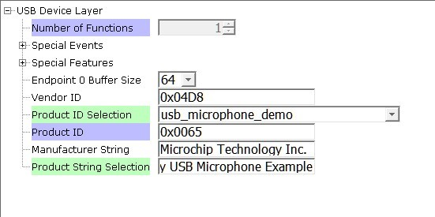
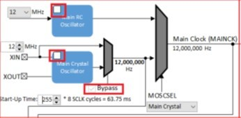

USB Configuration
The application uses USB Library as a "Device" stack, which will connect to a "Host". The USB High Speed Driver is selected to by �Full Speed� (not �High Speed�):
USB High Speed Driver Configuration
The USB Device Layer is configured by selecting the �usb_microphone_demo� with an endpoint buffer size of 64 (bytes). The
Audio Function Driver is configured for 5 USB endpoints with a single function having 3 interfaces. All of these are defined for a USB Microphone device in the fullSpeedConfigurationDescriptor array variable structure (located in initialization.c under the config folder). This structure defines the connection to the host at 48 Khz with 16 bit stereo channel data. A packet queue of length APP_QUEUE_SIZE (set to 2) is used for playback data. The maximum USB packets size is set to 16 samples * 2 channels per sample * 2 bytes per channel= 64 bytes, which gives a 1ms stereo sample packet size at 16Khz (the standard data frame length at this rate), thus the buffer size needs to be of the same size.

USB Device Layer Configuration
The Audio Function Driver is configured with a Audio Read Queue that matches that of the codec driver write queue for this Audio V1.0 USB Microphone interface.

USB Audio Function Configuration
The WM8904 Codec Configuration
The WM8904 codec uses a TWIHS0 (I2C) interface for module configuration and control register setting and a I2SC1 (I2S) interface for audio data. The default settings are used.
The default values are used for the TWIHS and I2C drivers.
The E70 I2SC1 driver is set to be the master with a data length of 16, 2 channels (stereo) and a MCLK divider value of of 256. These a default values, as shown below:
I2SC1 Peripheral Configuration
The I2S driver is configured with transfer queue size of 8 (default value) that matches that of the USB Read Queue, as shown below:

USB Microphone I2S Configuration
The WM8904 Codec is configured with an I2S slave interface operating at 16000 Hz sampling rate, as shown below:

USB Microphone I2S Configuration Also, the microphone input is enabled with bias for an electret microphone.
Pin Manager Configuration
The buttons, LED, Switch, I2S and I2C interfaces using GPIO pins via the Microchip Harmony Configurator (MHC) Pin Manager, as follows:
When the I2SC1 is used the following pins are used:
| NAME |
PORT |
E70 PIN |
Notes |
|---|
| I2SC1_WS |
PE00 |
4 |
I2S LRCK (Word Select) |
| I2SC1_DO0 |
PE01 |
6 |
I2S DO (Data Out) |
| I2SC1_DI0 |
PE02 |
7 |
I2S DI (Data In) |
| I2SC1_CK |
PA20 |
22 |
I2S BCLK (Bit Clock) |
| I2SC1_GCLK |
PA19 |
23 |
I2S MCLK (Bit Clock as used by the E70 I2SC1, I2S Master) |
| PMC_PCK2 |
PA18 |
24 |
I2S MCLK (Master Clock as used by the WM8904 Codec I2S Slave) |
| SWITCH |
PA11 |
66 |
Push Button |
| LED1 |
PA05 |
73 |
- |
| TWIHS0_TWCK0 |
PA04 |
77 |
I2C |
| TWIHS0_TWD0 |
PA03 |
91 |
I2C |
| STDBY |
PD11 |
98 |
- |
| LED2/VBUS DETECT(J203) |
PB08 |
141 |
J203 set to VBUS DETECT for USB Device |
Clock Manager
All clocks are generated from the 12 Mhz Main Clock oscillator, including the following.
| Clock |
Value |
Description |
|---|
| HCLK |
240 MHz |
Processor Clock |
| USB FS |
48 MHz |
USB Full Speed Clock |
The I2SC1 peripheral is set as the I2S bus master. It uses the I2SC1_GCLK to generate the I2S timing to the codec slave I2S interface.
The I2SC clocks are setup for 16Khz sampling rate (LRCK), with stereo 16 bit samples, giving a 32 bit sample frame. The frame bit clock (BCLK) and the I2S Master clock (MCLK) is calculated as follows:
LRCK = 16 KHz FRAME_SIZE = 16 bits/channel * 2 channels BCLK = LRCK * 16 * 2 = .512 KHz MCLK_MULT = 256 MCLK = MCLK_MULT * LRCK = 4.096 KHz
The generated MCLK should be set as close as possible to the calculated values as given below:
| CLOCK |
I2S Function |
|---|
| I2SC1_WS |
LRCK |
| I2SC1_CK |
BCLK |
| I2SC1_GCLK |
MCLK(I2SC1) |
| PCK2 |
MCLK(X32) |
The E70 XULT board only provides PCK2 as the source of the MCLK to the X32 WM8904 Codec Daughter Board connector. It must be generated the same as I2SC1_GCLK.
The actual generated value utilizes the PLLA clock as the source for both the I2SC1_GCLK and the PCK2. These values generate the following clocks These I2S clocks are generated from the I2SC1 GCLK peripheral acting as I2S master.
MPLAB Harmony Configurator: Clock Diagram Configuration
The MHC Clock Diagram to generate the processor (HCK), PCK2 (I2S MCLK), and the I2SC1 MCLK (I2SC1_GCLK) is given below.
USB Microphone MHC Clock Diagram
Uncheck the Main RC Oscillator and check the �Bypass� for the Main Crystal Oscillator. When the Bypass is checked, it will cause the Main Crystal Oscillator to become disabled. An external MEMS oscillator input on the XIN pin is used for Main Clock generation.

USB Microphone Main Clock
The PLLA clock is generated from 12 Mhz Main Clock using the selected DIVA and MULA values, as shown below:

USB Microphone PLLA Clock
The I2S MCLK is generated using both the PCK2 output and the I2SC1_GCLK. These are both enabled and generated using the PLLA clock source to give the same value of 4,095,238 Hz (to approximate the 4096000 Hz sampling rate), as shown below:

USB Microphone I2S1 GCLK and PCK2 Configuration
Timer Driver
The Timer driver configuration, Timer driver instance 0, is used by a system for button processing (debounce and long press) and LED blink delay. It needs to be set to �Enable Period Interrupt�. It is also required by the WM8904 Codec Driver. The default configuration values are used.